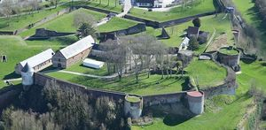
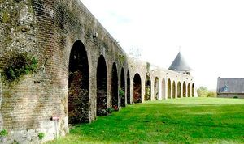
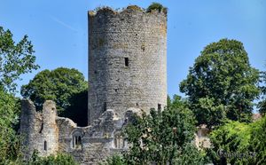
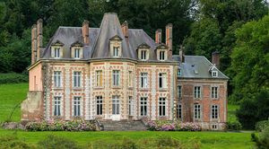
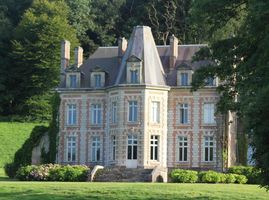
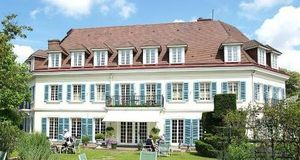
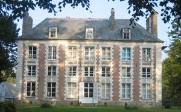

Recensement Jean-Claude Truffet







| Département | 62 — Pas-de-Calais |
| Canton | Berck |
| Commune | Montreuil sur mer |
| Type d'édifice | Vestiges château |
| Période d'origine | XVIII-XX |
| Coordonnées GPS | 50° 27' 53" Nord, 1° 45' 47" Est |
Trois châteaux dans cet article la Calotterie la Citadelle de Montreuil et d'Hesmond. CALOTTERIE, situé en milieu rural, à l'écart du village, à flanc de coteau, dans un cadre magnifique; le château se détache sur un fond boisé. Ce château, construit au XXe siècle, a cherché à imiter le style du début du XVIIe siècle. L'édifice comprend un corps de bâtiment rectangulaire présentant un avant-corps central à trois pans coiffé d'une haute toiture pyramidale. Il a été réalisé en pierre et brique ; la première constitue les chaînages d'angle, les pilastres à refends séparant les travées, au nombre de deux, de part et d'autre de l'avant-corps, les cordons horizontaux courant au-dessous et au-dessus des fenêtres de l'étage supérieur, les encadrements de celles-ci et de leurs allèges, enfin la corniche; la brique ne constitue que le remplissage des cadres ainsi déterminés. Les cinq lucarnes ont été coiffées d'un fronton triangulaire. Sur la droite, une aile un peu plus basse et légèrement en retrait a été dotée d'une élévation à deux niveaux; de larges panneaux se sont trouvés ménagés entre les fenêtres traitées avec beaucoup plus de simplicité que celles du château. MONTREUIL, citadelle, La place forte de Montreuil est née de la volonté de protéger la vallée de la Canche et le Hesdinois des incursions scandinaves. Son site stratégique lui valut d'être constamment adaptée à l'évolution des techniques militaires jusqu'au XVIIIe siècle. Le résultat est un site exceptionnel par son étendue et sa qualité. La Citadelle de Montreuil-sur-Mer est une citadelle royale pré-Vauban du XVIe siècle . Elle est construite sur les bases d'un château royal médiéval le chemin de ronde et tour encore visible et Les ruines des remparts avaient fait l'objet d'un classement au titre des M.H. le 10 septembre 1913; propriété de la ville.
HESMOND, l'origine rendez vous de chasse a été construit à la fin du XVIIIe siècle pour Charles-Marie de Créquy, marquis d'Hesmond. On dit que, lorsque sa femme, née Marie-Anne-Thérèse-Félix du Muy, la célèbre marquise de Créquy, auteur de Mémoires, vit le château pour la première fois, elle l'aurait trouvé trop exiguë et mesquin. Son mari, qui ne partageait pas cet avis, fit alors graver l'inscription que l'on peut toujours lire sur une plaque de marbre à la façade avant : "Parva sed apta mihi"; la propriété appartient aujourd'hui au marquis de Bournonville. Précédée d'une entrée en hémicycle, la demeure dresse sa silhouette sur un fond boisé. Edifiée en pierre et brique, la pierre est disposée en harpe, traitée à refends aux angles. Le château est composé à l'arrière d'un étage supplémentaire, en raison d'une dénivellation du sol. A l'avant, la partie centrale, formée de trois travées, se distingue par l'étroitesse de leurs trumeaux. En façade postérieure, elle est en rotonde et présente, au deuxième niveau, des ouvertures plus grandes que celles du reste de l'édifice. Cette disparité tient au fait qu'à l'intérieur, le grand salon qui l'occupe n'est pas entresolé comme les autres pièces. Ce salon est l'élément le plus intéressant à la fois par ses dimensions et par ses dessus de portes sculptés qui sont d'une grande élégance. On notera aussi les nombreux carreaux en faïence aux dessins variés et la belle rampe d'escalier à balustres en bois découpé.
Hesmond; Charles-Marie de Créquy, Citadelle ; Vauban"
Trois châteaux dans cet article la Calotterie grav 4-5 la Citadelle de Montreuil grav 1-2_3 et d'Hesmond grav-6-7. GPS : 50° 27' 53" Nord, 1° 45' 47" Est